Nivel 7 · Penumbra
Nivel 7 de 26
Este documento fue tan censurado que casi no queda nada. Casi.

Escribe lo que logres leer.
¿Necesitas una pista?
Sube primero el brillo hasta 5 o 6 y luego el contraste, de a poco.
conspiracion.cl · recreación fan · inspirado en Notpron · nivel 7/26